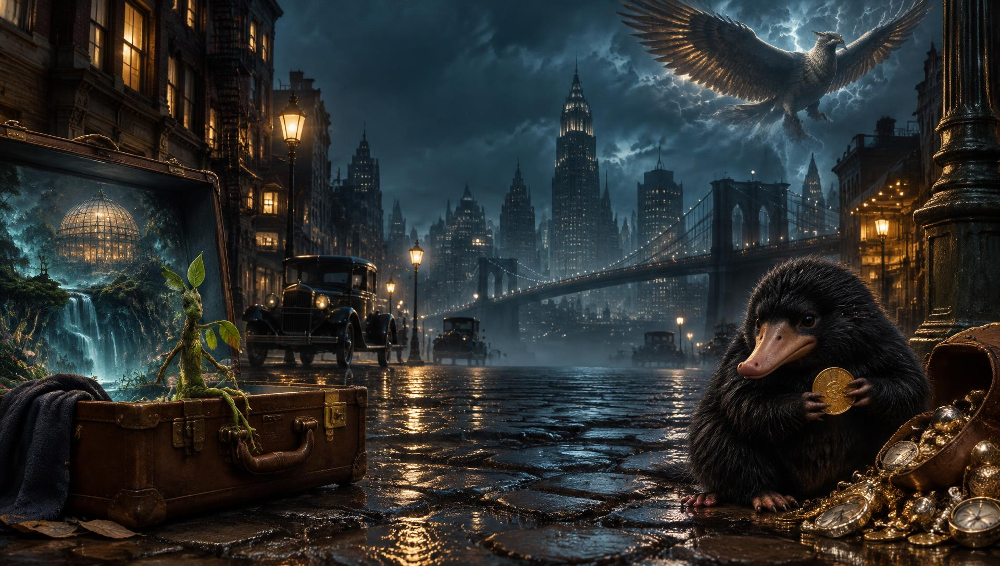
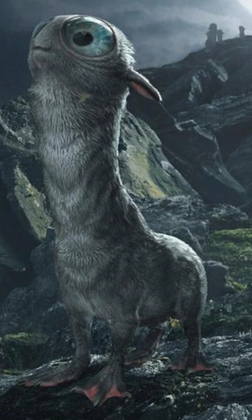

← VOLTAR ÀS CRIATURAS

MOONCALF
Mooncalf · Criatura lunar
O Mooncalf tem corpo liso e acinzentado, olhos grandes e um pescoço comprido. Só sai da toca nas noites de lua cheia.
Nessas noites, ele faz uma dança curiosa, em círculos, sobre as patas traseiras. Na mala de Newt, é cuidado com muito carinho.
HABITAT
Campos e áreas abertas
ALIMENTAÇÃO
Herbívoro
TEMPERAMENTO
Tímido e dócil
CLASSIFICAÇÃO
XX (Ministério)